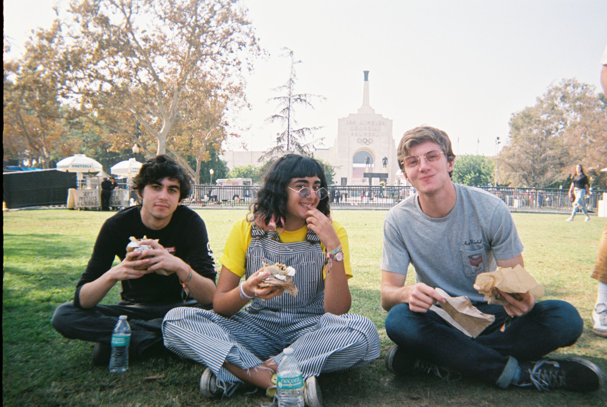

While it isn't technically part of USC's campus, and isn't included in the map, Exposition Park is a presence for every USC student.
It takes people straight to Santa Monica, which is where we were headed when I took this photo.
It also houses the shrine of USC - the Coliseum.
While gamedays are obiously a pronounced memory, there are plenty of other moments that park south of campus holds.
My first time hanging out off campus was at a little kids park right across from campus, where me and friends I met welcome week went on the blue seesaw and talked for an hour.
I've been at the Rose Garden early in the morning, filming host wraps for my documentary group.
The biggest event in Expo Park besides football games is Camp Flog Gnaw: Tyler The Creator's festival.
Freshman year, on the day I arrived in Los Angeles, I saw that this festival was on presale, and not knowing another person who was at USC, I bought two tickets.
I hadn't even seen my dorm room yet, since we were staying at a hotel that first night.
The people who I went to that festival with, in November, are the people I am still closest to now.
- MP
